Bucles
Los bucles son declaraciones similares en cierta manera a la de los condicionales, ya que tambien dependen de si se cumple una condicón o no para ejecutarse, sin embargo los bucles poseen una caracteristica que los diferencia, y esta es la particularidad de que un bucle en al cual se cumple su condición se ejecutara una y otra vez siemple que esta condicón siga cumpliendose, existene dos tipos debucles: y los determinados:
-
Indeterminados:
Son aquellos bucles a los que no se les indica su duración por lo que podrian ejecutarse infinitamete.
-
Determinados:
Son aquellos bucles a los que seles indica cuantas veces deben ejecutarse, por lo que tienen un numero de ejecuciones controlado.
Bucles Indeterminados
While
-
El while se trata del bucle con el funcionamiento más basico, este consiste en una condición la cual se declara luego del la palabra clave "while" utilizada para llamar a la función, si esta condicón se cumple el bloque de codigo delimitado por llaves ( { } ) se ejecutara, y al terminar se analizara si la condición sigue cumpliendose, de ser así el codigo se ejecutara nuevamente, y así continuara hasta que la condición deje de cumplirse.
Ejemplo
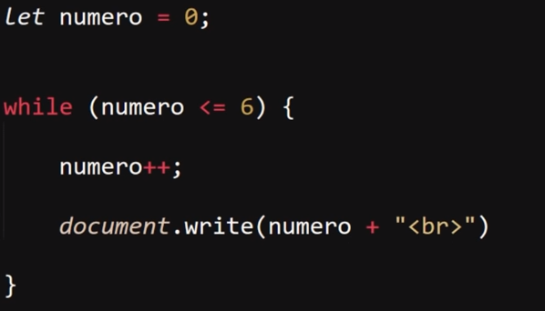
Resultado
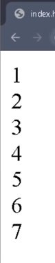
En este ejemplo la condición de bucle se cumple por lo tanto el codigo en su interior se ejecuta, en el que se le suma uno a la varible "numero" y luego se imprime en pantalla, esto se repite multiples veces hasta llegado el mometo de que la varible "numero" igualo el valor de 6, por lo que en ese mometo la condición dejo de cumplirse, por lo que el bluque se detiene.
nNota: en un bucle "while" si la condición no se cumple este sera ignarado sin ejecutarse ni una sola vez.
Do While
-
Se trata de un un bucle alternativo a "while" con la diferencia de que en este caso la condición se ubica despues del codigo a ejecutar, el cual es contenido por la palabra clave "Do", por lo tanto en este tipo de bucle primero se ejecuta el codigo de este y de ultimo se valida si se cumple o no la condicón, la cual de completarse el bucle se repetira las veces que sean necesarias hasta que la condicón deje de cumplirse.
Por lo tano este tipo de bucle garantiza que el codigo en su interior sea ejecutado almenos una vez, ya primero se procesa el codigo y luego su condición.
Ejemplo
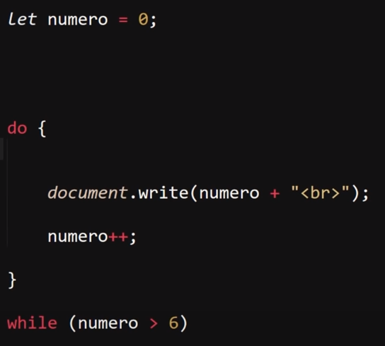
Resultado
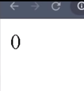
En este ejemplo se puede apreciar como pese a que la condición no se cumple el bucle se ejecuta una vez, esto ya que primero se porcesa el codigo y de ultimo la condición.
Se podra decir que en el bucle "do while" la condición no define el si el bucle se ejecutara, en su lugar define el si el bucle se repetira o no.
Bucles Determinados
For
-
La estructura que compone este tipo de bucle tiene la particularidad de que estar dibidida en tres partes, dibididas por punto y coma (;) de las cuales cada una define un aspecto de la funcionalidad de este, las tres partes que lo componene son:
-
Declaración e inicialización:
El bucle "For" al ser un bucle determinado es necesario definir el numero de veces que se ejecutara, para lo cual en este primera porción de su estructura se define una varible que actuara como contador de las repeticiones realizadas (Por lo general se nombra como "i" de "increment").
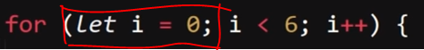
-
condición
En esta seguna porción de su estructura se define la condicón con la cual de cumplirse se ejecutara el bucle.
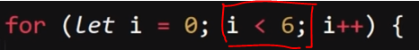
-
Aumeto o Decremeto:
Por ultimo se encuetra la ejecución del conteo de las repeticiones, en la cual se aumeta o reduce el valor del contador (Varible "i")
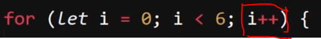
Ejemplo
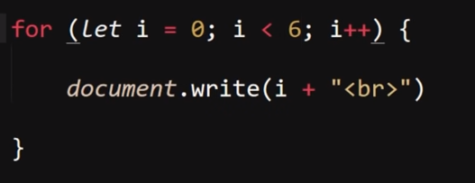
Resultado
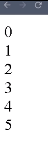
Existe una segunda forma de trabajar con los bucles "for", la cual consiste en definir la varibles contador "i" en el exterior del bucle, de este modo de ser necesario la varible pudiese seguir estando disponible fuera de este bloque de codigo.
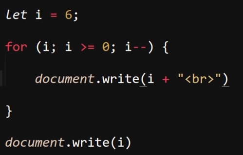
Para esto en vez de inicializar la varibles dentro del "for", basta con simplemte llamarla dentro de este.
For In y For Of
-
Se tratan de dos bucles determiandos con la caracteristica de que su aplicación es la de recorrer un array, basicamete se tratan de bucles para encontrar valores dentro de estos, en si el funcionamiento de ambos es igual, lo primero para emplearlos es definir una varible dentro de estos en la cual se almacenaran los datos que se extraigan del array, luego se realiza el llamado a este utilizando su nombre.
Ejemplo For In
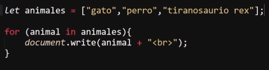
Ejemplo For OF
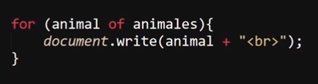
En estos ejemplos los bucles extraen los datos del array "animales" y los almacenana en su variable interna "animal", por cada dato realiza una repetición y se extrae un dato.
Estos bucles no necesitan de condición y el rol de su contador lo realizaran las datos del array, ya que este bucle se ejecutara una vez por cada dato en este, sin embargo en cuanto a el que datos se extraen del array existe una diferencia entre ambos:
-
For In
Este bucle unicamete extraera la posicio (numeración) de los datos del array
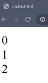
En este ejemplo se imprime en pantalla los datos almacenados en la variable "animal" en cada una de sus ejecuciones, de los cuales cada uno corresponde a la posición (numeración) de cada dato del array.
-
For Of
Este bucle se encarga de extraer el valor de los datos dentro del array.
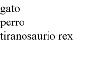
En este ejemplo se imprime en pantalla los datos almacenados en la variable "animal" en cada una de sus ejecuciones, en los cuales se extrea el valor de los datos del array.
En resumen el "For In" y el "For Of" son bucles que extraen datos de una array, el "For In" extrae la posición de estos (numeración) mientras que "For Of" extre el valor de los datos del array.
Sentecias
Break
-
Se trata de una sentencia con la función de forzar la culminación de un bucle, es decir esta palabra clave al ejecutarse obliga al bucle en el que se encuentre a detenerse en ese mometo.
Ejemplo
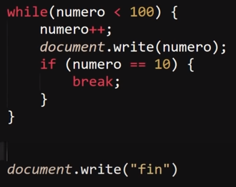
Resultado
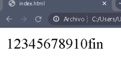
En este ejemplo se definio un bucle que se ejecutara hasta que la variable "numero" alcanse un valor de "100", sin embargo dentro de este tambien se incluyo un condicional (if) con la sentencia de que cuando el "numero" alcanse el valor de "10" se aplique la sentecia break forzando la culminación del bucle y continuado con el codigo del dicumento JS.
Continue
-
"Continue" es una sentencia con un funcionamiento similar al de "Break", sin embargo su efecto se diferencia en que este no termina por completo el bucle, unicamente termina la interacción en la que se encuentre, es decir esta sentecia permite saltarse alguna de las repeticiones del bucle permitiendo que este continue ejecutandose.
Codigo
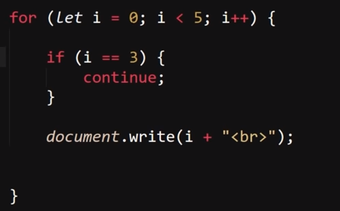
Resultado
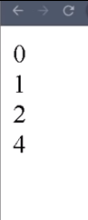
En este ejemplo segenero un bucle for que imprimira en pantalla los numeros de su contador, empezando por el cero hasta que este alcanse un valor de "5", sin embargo dentro de este se encuentra un condicional "if" aplicando la sentecia "continue" para saltarse la interacción correspondiente a cuando el contador tenga un valor de "3".
Label
-
En si esta no se trata de una sentencia, si no de una funcionalidad, consisten en generar un nombre para un bucle, para de esa forma identificarlo entre los demás, este recurso es utilia para los casos en los que se defina un bucle dentro de otro, ya que de es modo es posible indicar a cual de todos los bucles se le desea aplicar un "break" o un "continue" ya que en condiciones normales el "break" o el "continue" afectan unicamete al bucle inmediato en el que se encuentran.
Ejemplo sin label
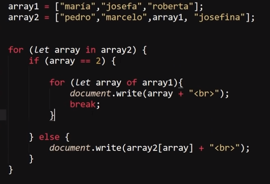
Resultado sin label
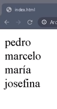
En este ejemplo se genero un sistema de dos bucles uno dentro de otro, en el cual se realiza una doble busqueda utilizando un bucle "For In" para el array externo y un "For Of" para el array interno, (se usaron ambos simpletmete por la explicación del curso) tambien se utiliza un condicional (If) para definir que solo se realise el segundo bucle al tratarse del elemeto deseado (segundo array), luego de la primera ejecuación del "For Of" se emplea un break para romper la ejecución del bucle, y de ese modo no se muestren todos los datos que este posee.
La sintaxis de un label consiste en incluir "for" delante del nombre del bucle, finalizando con dos puntos(:) todo escrito sin espacios, completamete pegado, y debe estar ubicado justo antes (o encima) del inicio del bucle.
Ejemplo con label
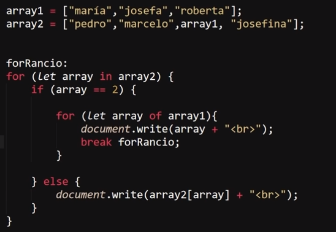
Resultado con label
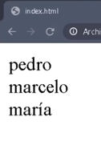
En el primer caso de uso la sentencia Break se uso de forma normal para romper el bucle en el que se encontraba, sin embargo en este nuevo caso de uso, al generar el label del bucle atribullendole el nombre "forRancio" y utilizarlo para definir que el break debe forzar la dentención del bucle externo de este modo se culmina con la ejecución de todo el bloque de codigo dese modo se puede definir a cual bucle aplicar un break o un continue impidiendo en este caso que se muestre el ultimo dato del array externo (josefina)
.